"安装 Claude Code 时，提示我打开 Terminal 输入命令。"
"CodeX 提供了 CLI 工具，也可以用 GUI 界面。"
"Cursor 是个 IDE，但也可以通过命令行启动。"
如果你在使用 AI 工具时听到这些词有过一瞬间的迟疑，不确定对方到底在说什么——这篇文章就是为你写的。
这些概念不是什么高深的技术术语，但它们确实是 AI 工具使用中的"通用语言"。搞不清楚它们，就像听别人说话时总有几个字听不清，虽然能猜个大概，但总觉得不踏实。
更要命的是，这些词经常被混用。有人说"打开命令行"，其实是让你打开终端；有人说"用 CLI 调用 API"，但你不知道这和在网页上用有什么区别。
今天就把这些概念一次性说清楚。
省流版：核心区别
界面类型（人怎么跟软件互动）：
环境概念（在哪里操作）：
工具类型（软件是干什么的）：
一句话记住： Terminal 是地方，Shell 是翻译，命令行是方式，CLI/TUI/GUI 是界面类型，IDE 是工具套装。
下面逐个拆解。
为什么这些概念容易混？
因为它们不在同一个维度。
就像你问"苹果和水果有什么区别"——这个问题本身就有问题，因为苹果是水果的一种，它们不是并列关系。
这些概念也一样：
所以一个 IDE 可以是 GUI 的（Cursor、VS Code），也可以高度依赖终端（Claude Code）。
一个工具也可能同时有多种界面：OpenAI 提供了 CLI 工具，也有网页版 GUI（ChatGPT），还有 API 接口。
搞清楚这个分层逻辑，后面就好理解了。
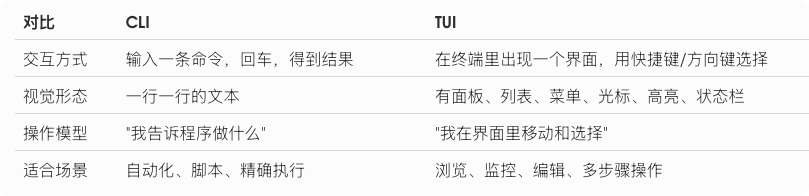
第一层：界面类型——CLI、TUI、GUI 的本质区别
这三个词说的是"人怎么跟软件对话"。
CLI：Command Line Interface（命令行界面）
核心特征： 你输入命令，程序输出文本。
典型例子：
1. 调用 OpenAI API
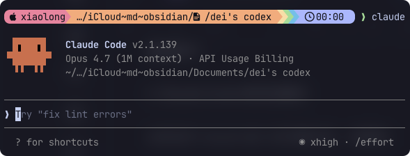
输出结果：
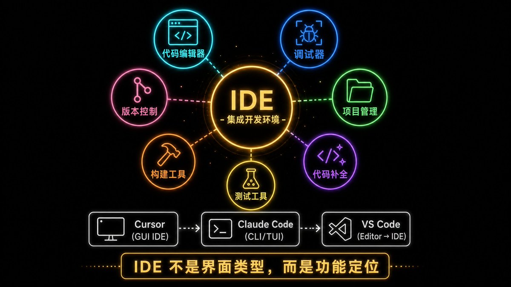
2. 使用 Claude Code
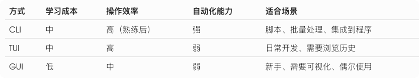
输出结果：
```json
正在分析 main.py...
发现 3 个潜在问题：
1. 第 15 行：变量未定义
2. 第 23 行：建议使用 try-except
3. 第 40 行：函数命名不规范
```3. 安装 AI 工具
```
pip install openai
```输出结果：
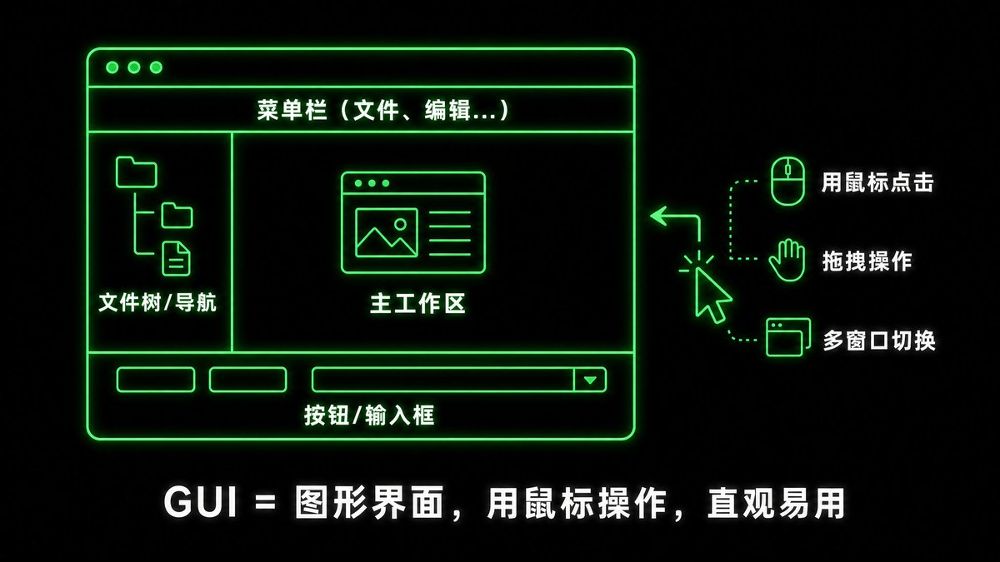
使用场景：
怎么判断一个工具是 CLI？
看它的使用方式：
比如：
claude "帮我写个函数"
输入 → 回车 → 得到结果 → 结束。这就是 CLI。
```
┌─ OpenAI API Configuration ─┐
│ │
│ API Key: [sk-... ] │
│ Model: [▼ gpt-4 ] │
│ Timeout: [30s ] │
│ │
│ [Save] [Cancel] │
└─────────────────────────────┘
```TUI：Text-based User Interface（终端文本界面）
核心特征： 跑在终端里，但不是单纯一行行命令，而是有"界面感"——列表、面板、快捷键、光标选择。
典型例子：
1. Claude Code 的交互模式
当你运行 claude 进入交互模式后，会看到：
```markdown
┌─────────────────────────────────────────────────────┐
│ Claude Code │
├─────────────────────────────────────────────────────┤
│ 对话历史： │
│ > 你：写一个 Python 函数计算斐波那契数列 │
│ < Claude: 好的，我来帮你写... │
│ │
│ def fibonacci(n): │
│ if n <= 1: │
│ return n │
│ return fibonacci(n-1) + fibonacci(n-2) │
│ │
│ [↑↓] 浏览历史 [Tab] 补全 [Ctrl+C] 退出 │
└─────────────────────────────────────────────────────┘
```你可以用方向键浏览历史对话，用斜杠键调用 skill，整个界面是交互式的。
2. 一些 AI 工具的配置界面
有些工具在安装时会弹出配置界面：
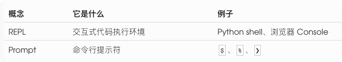
你可以用 Tab 键在不同选项间切换，用方向键选择下拉菜单。
使用场景：
怎么判断一个工具是 TUI？
看它的使用方式：
比如：
claude
输入后，整个终端变成了一个对话界面，你可以用方向键浏览历史，用快捷键操作。这就是 TUI。
```json
curl https://api.openai.com/v1/chat/completions \
-H "Authorization: Bearer YOUR_API_KEY" \
-d '{"model": "gpt-4", "messages": [{"role": "user", "content": "Hello"}]}'
```GUI：Graphical User Interface（图形用户界面）
核心特征： 用窗口、按钮、菜单、图标、鼠标操作。
典型例子：
1. ChatGPT 网页版
2. Cursor
3. VS Code
使用场景：
为什么 AI 工具都提供 GUI？
因为大部分用户更习惯图形界面。ChatGPT 如果只有 CLI，用户量会少很多。
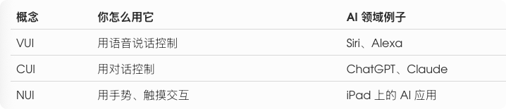
CLI vs TUI：关键区别
很多人把 CLI 和 TUI 混为一谈，因为它们都在终端里用。但区别很明显：
举个例子：
```
Collecting openai
Downloading openai-1.12.0-py3-none-any.whl (226 kB)
━━━━━━━━━━━━━━━━━━━━━━━━━━━━━━━━━━━━━━━━ 226.7/226.7 kB 2.1 MB/s
Installing collected packages: openai
Successfully installed openai-1.12.0
```CLI 方式调用 OpenAI API：
```json
pip install openai
```你输入一条命令，回车，得到 JSON 结果。
TUI 方式使用 Claude Code：
claude
进入交互界面后，你会看到：
所以：
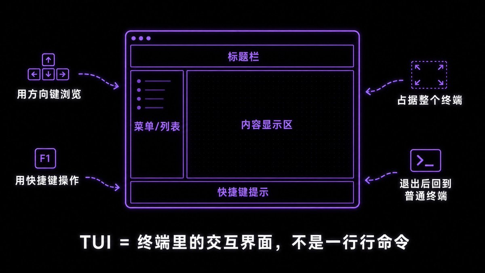
第二层：环境概念——TERMINAL、SHELL、命令行的区别
这是最容易混淆的一组概念。
Terminal：终端/终端模拟器
它是什么： 一个显示文字、接收键盘输入的窗口程序。
典型例子：
简单理解：
Terminal 就是一个"文字显示器"。你打开它，看到一个黑色（或白色）的窗口，里面可以输入文字，也可以显示文字。
就像你打开记事本可以输入文字一样，Terminal 也是一个可以输入文字的窗口，只不过它专门用来运行命令和程序。
Shell：命令解释器
它是什么： 运行在 Terminal 里的程序，负责理解你输入的命令，并启动相应的程序。
典型例子：
它负责什么：
场景：你想用 Claude Code 分析一个文件
claude "分析 main.py"
当你输入这条命令时：
再举个例子：安装 OpenAI 的 Python 库
```json
{
"choices": [
{
"message": {
"role": "assistant",
"content": "def fibonacci(n):\n if n <= 1:\n return n\n return fibonacci(n-1) + fibonacci(n-2)"
}
}
]
}
```发生了什么：
```json
Collecting openai
Downloading openai-1.12.0-py3-none-any.whl
Installing collected packages: openai
Successfully installed openai-1.12.0
```命令行：Command Line
它是什么： 通过输入文字命令来操作程序的交互方式。
注意： 命令行不是一个具体的软件，而是一种操作方式。
三者关系：地方、翻译、方式
可以把它想成一个"剧场"：
Terminal = 舞台/屏幕（地方） Shell = 主持人/翻译（解释器） 命令行 = 你说话下指令这种交流方式（方式） CLI 程序 = 你说的一句句话（具体内容） TUI 程序 = 在舞台上演出的交互式小节目
```json
curl https://api.openai.com/v1/chat/completions \
-H "Content-Type: application/json" \
-H "Authorization: Bearer YOUR_API_KEY" \
-d '{"model": "gpt-4", "messages": [{"role": "user", "content": "Hello"}]}'
```完整链路：
场景：你要使用 Claude Code
1. 你打开 Terminal（比如 macOS 的终端 app） → Terminal 是一个窗口程序，显示文字的地方 2. Terminal 自动启动 zsh → zsh 是 Shell，负责理解你输入的命令 3. 你输入：claude "帮我写个函数" → 这是 CLI 方式使用 Claude Code → 输入命令 → 得到结果 → 结束 4. 你输入：claude → 这是 TUI 方式使用 Claude Code → 整个终端变成交互界面 → 你可以持续对话，用快捷键操作 → 按 Ctrl+C 退出，回到普通终端 5. 你输入：open -a Cursor → 启动 Cursor（GUI 程序） → 打开一个新的图形化窗口 → 用鼠标点击、拖拽文件
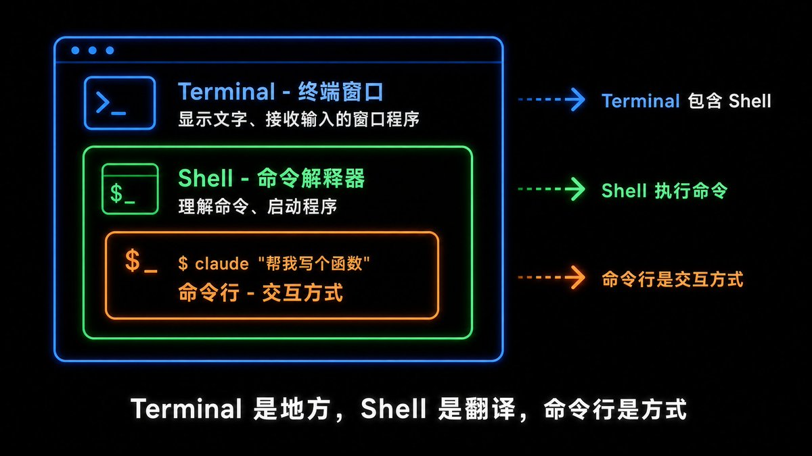
关键理解：
日常口语中的混用
很多人会说：
"打开命令行。"
这句话严格来说不准确，因为命令行是一种交互方式，不是一个可以"打开"的东西。
但大家都懂这句话的意思其实是：
"打开一个终端窗口，然后在里面输入命令。"
所以日常交流中混用没问题，但理解底层概念能让你在技术文档和讨论中更精确。
第三层：工具类型——IDE 是什么？
IDE：Integrated Development Environment（集成开发环境）
它是什么： 面向开发的一整套工具环境，通常包含：
典型例子：
注意： IDE 不是一种界面类型，而是一种功能定位。
一个 IDE 可以是 GUI 的（Cursor、VS Code），也可以高度依赖终端（Claude Code）。
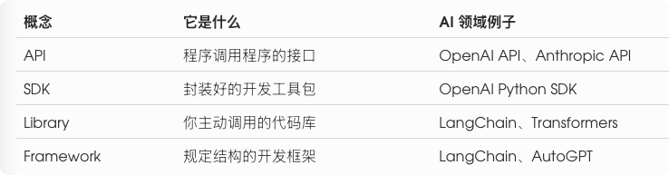
Cursor 和 Claude Code 有什么区别？
但它们都是"开发环境"，都集成了 AI 能力。
实战场景：使用 AI 工具的三种方式
假设你要使用 OpenAI 的 GPT-4，可以有三种方式：
方式 1：纯 CLI（命令行）
使用 curl 调用 API：
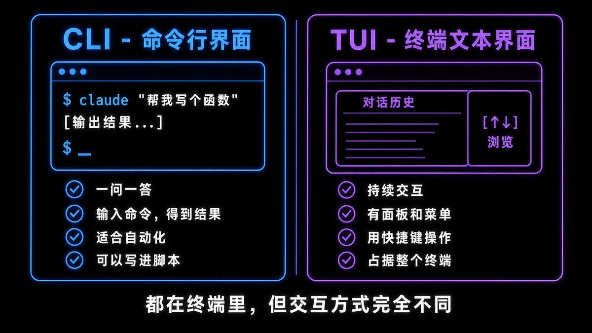
输出结果：
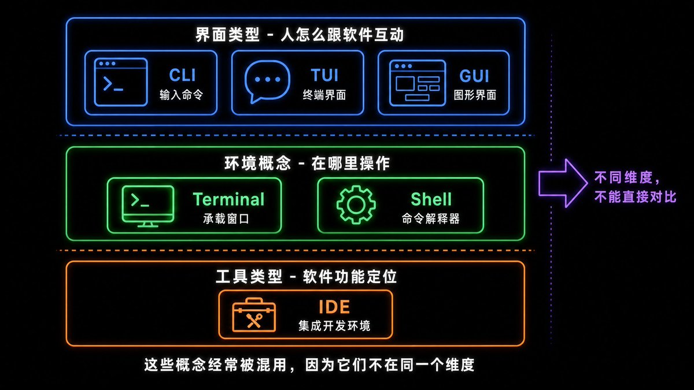
优点： 精确、可脚本化、适合自动化（比如批量处理 100 个文件） 缺点： 需要记命令、不直观、结果是 JSON 格式需要解析
方式 2：TUI（终端界面）
使用 Claude Code：
claude
进入交互界面后：
```json
curl https://api.openai.com/v1/chat/completions \
-H "Content-Type: application/json" \
-H "Authorization: Bearer YOUR_API_KEY" \
-d '{
"model": "gpt-4",
"messages": [{"role": "user", "content": "写一个 Python 函数计算斐波那契数列"}]
}'
```优点： 可视化、快捷键高效、不离开终端、可以浏览历史对话 缺点： 需要学习快捷键、不如 GUI 直观
方式 3：GUI（图形界面）
打开 ChatGPT 网页版：
或者使用 Cursor：
优点： 直观、易上手、可以看到格式化的代码、可以点击复制 缺点： 鼠标操作慢、不适合自动化、需要打开浏览器或应用
三者对比
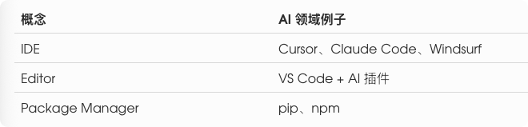
我的建议：
为什么越来越多工具提供 CLI？
你可能注意到了，最近很多工具都开始提供 CLI 版本：
为什么会有这个趋势？
1. 自动化需求爆发
AI 时代，大家都想把工具串起来：
CLI 是唯一能做到这些的方式。GUI 需要你手动点击，TUI 也不适合自动化。
2. 开发者是核心用户
AI 工具的顶级用户是开发者和技术人员。他们：
所以提供 CLI 是刚需。
3. API 经济的延伸
很多公司发现：
CLI 让"用 AI"和"集成 AI"之间的门槛降低了。
4. 效率优势
对于高频操作，CLI 比 GUI 快得多：
一旦熟悉命令，CLI 的效率是 GUI 的数倍。
这个趋势意味着什么？
如果你想深度使用 AI 工具，学会基本的 CLI 操作是必须的。不是说要成为命令行专家，而是要：
这些基础技能，会让你在 AI 时代走得更远。
为什么要搞清楚这些概念？
1. 看懂安装文档
很多 AI 工具的安装文档会说：
"Open your terminal and run: pip install openai"
如果你不懂这些概念，就会卡在第一步。
懂了之后，你知道：打开 Terminal → 输入命令 → 回车。
2. 选对工具
当你需要使用 AI 工具时，你会知道：
而不是盲目跟风。
3. 遇到问题知道怎么搜
搜索关键词更精确，解决问题更快。
附录：相关概念速查
如果你已经搞清楚了 CLI、TUI、GUI、Terminal、Shell，这些相关概念也值得了解：
界面形态类
```json
{
"choices": [
{
"message": {
"role": "assistant",
"content": "Hello! How can I help you today?"
}
}
]
}
```开发者接口类
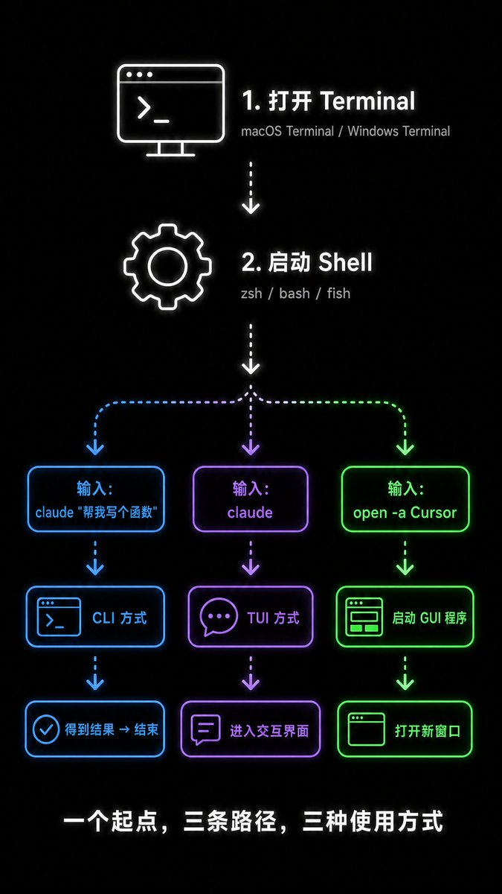
一句话区别：
命令行相关
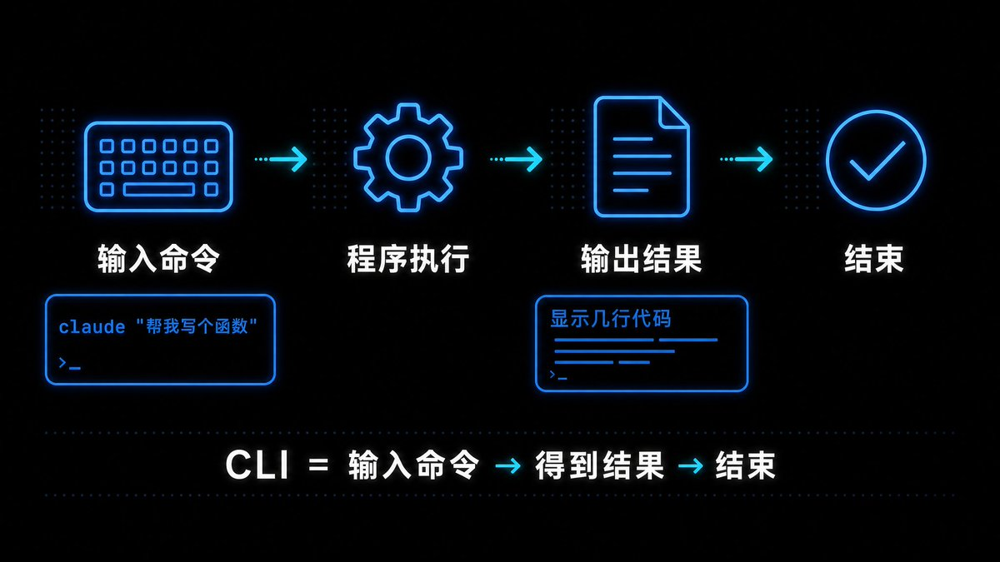
REPL 例子：
python >>> import openai >>> openai.chat.completions.create(...)
输入代码 → 立即执行 → 看到结果。
工具类型
```json
claude "帮我分析这个文件"
```速记
人操作软件：CLI / TUI / GUI 程序操作程序：API / SDK 开发环境：Terminal / Shell / IDE AI 工具举例： - ChatGPT（GUI） - Claude Code（CLI/TUI） - OpenAI API（API） - Cursor（GUI IDE）
最后
这些概念不是为了考试，而是为了让你在 AI 工具的世界里更自如。
当你看到一个新的 AI 工具时，你会自然地问：
这些问题的答案，会直接影响你的学习路径和使用方式。
搞清楚这些概念，不是为了炫技，而是为了：
就像学会了"水果"、"苹果"、"红富士"这些词的区别，你在菜市场就不会被绕晕。
AI 工具的世界也一样。
关于作者
我是观自，如果你在 AI 商业落地上有困惑，欢迎交流。